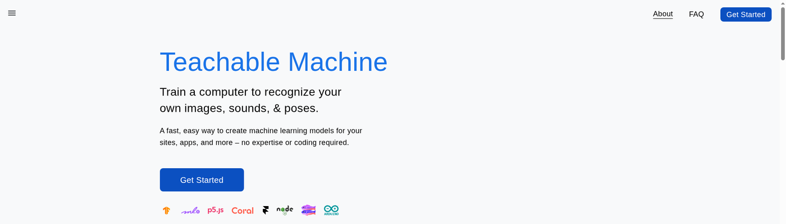
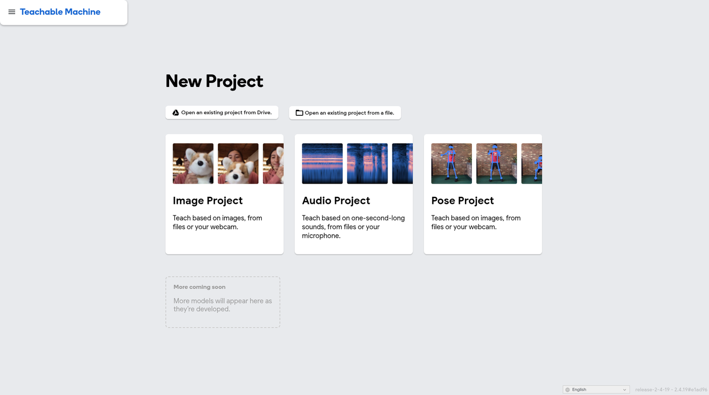
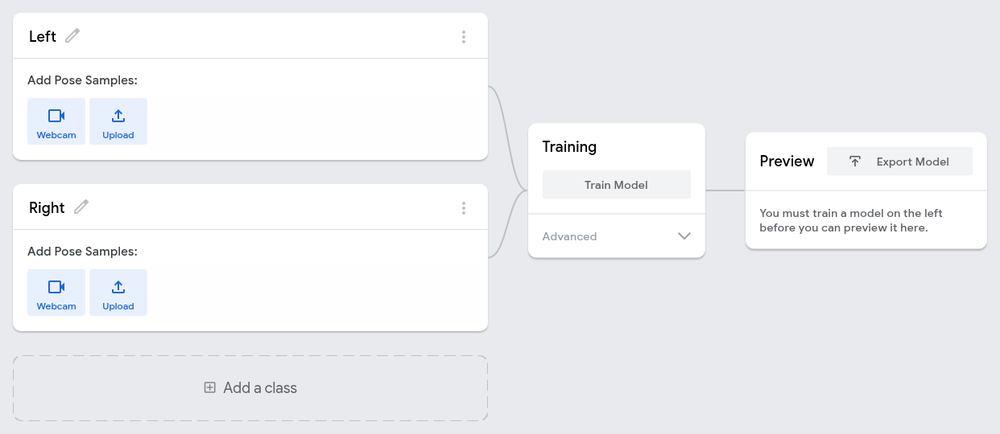
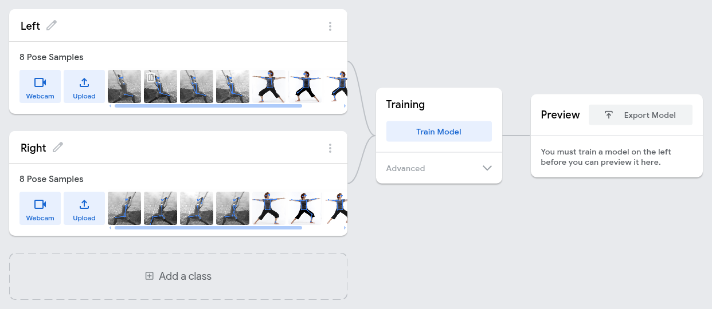
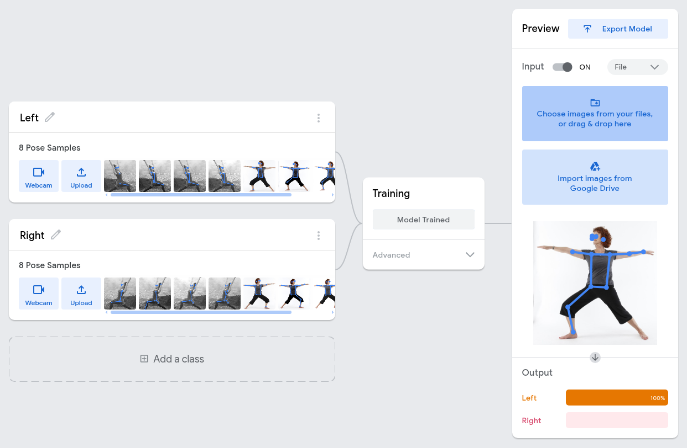
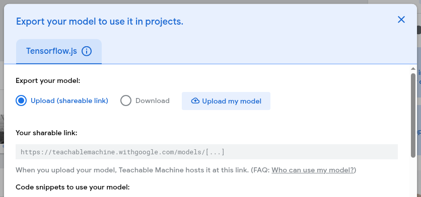
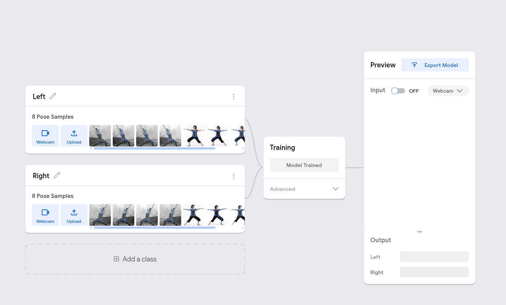

用 prompt 產出流程圖
把下面這句貼到課堂的 AI 工具，請它畫出遊戲的流程圖。看完圖之後，找出這三件事：食物怎樣出現、怎樣計分、怎樣用姿勢控制角色。
我想做一個小學 Fun Day 接食物遊戲。角色站在畫面下方，食物會從上方隨機位置掉下來。玩家用身體向左或向右的姿勢控制角色左右移動。接到一個食物就加 1 分，分數到達 50 就勝利。請畫一張流程圖，清楚標示：遊戲開始要做什麼、食物怎樣出現和掉落、怎樣計分、姿勢怎樣變成左右移動、遊戲何時結束。
訓練姿勢模型（Teachable Machine）
我哋用 Pose（姿勢） 專案來訓練模型，不要選 Image。兩個類別的名稱一定是 Left 和 Right，連大小寫都要一樣，這樣遊戲積木才會認得。
2.1 打開網站，按 Get Started
打開 teachablemachine.withgoogle.com，按藍色的 Get Started。

2.2 選 Pose Project
會見到三個專案類型。請選右邊的 Pose Project（姿勢）。不要選 Image Project。

2.3 把兩個類別改名為 Left 和 Right
按類別名稱旁邊的鉛筆，把兩個類別改成 Left 和 Right。名稱要和遊戲裡的積木一模一樣。

2.4 用鏡頭拍攝樣本
按 Webcam。請讓整個上半身入鏡，背景儘量簡單，每部電腦只得你一個人入鏡。按住拍攝按鈕，每邊至少拍 20 張。兩邊的動作要明顯不同：一邊身體向左，一邊向右。

2.5 按 Train Model，再預覽
按 Train Model，等訓練完成。然後用鏡頭預覽：身體向左時，Left 的長條應該明顯較高；向右時，Right 應該較高。如果分得唔清，就再補幾張樣本，再訓練一次。

2.6 匯出模型並複製網址
按 Export Model。在視窗裡選擇 Upload (shareable link)，再按 Upload my model。上傳完成後，按網址旁邊的 Copy，按鈕會變成 Copied。請把網址貼在下面，等等要用。

2.7 關掉 Input 鏡頭
轉去遊戲之前，一定要把 Preview 的 Input 撥到 OFF。如果這邊鏡頭還開著，Playground 就用不到鏡頭。

打開半完成專案
- 打開 MIT RAISE Playground。
- 按 File，再選 Load from your computer。
- 打開老師分給你的檔案（A 層、B 層或 C 層）。不要用 scratch.mit.edu。
- 如果瀏覽器問你是否允許鏡頭，請選擇允許。
- 把模型網址貼到「使用模型」積木，按綠旗，等綠色剔號出現後才開始玩。
我的層別
遊戲已砌好。請訓練模型，把網址貼到「使用模型」再試玩。選做勝利台詞或改 speed。
先補食物分身和一次計分，再接模型與左右移動。如老師有派發提示卡，可以按指示打開。
只有背景、造型和變數 score、speed。請對照流程圖自己砌齊主要邏輯。先不要看提示卡。
重要規則：每個食物只可以加 1 分
計分只加一次
- 正確：在「食物」的分身裡，下落結束之後，若碰到「同學」，分數改變 1，然後隱藏並刪除分身。
- 不正確：把「碰到就加分」放在角色的「重複直到」裡面。這樣一個食物可能加很多分，分數會一次過跳好多。
試玩與延伸
試玩一次，看你能不能接到 50 分。如果已經穩陣，可以選做：
遇到問題時
- 看不到鏡頭：先關掉 Teachable Machine 的 Input，再重新整理 Playground 並載入專案。
- 按了綠旗但角色不動：先等綠色剔號；再檢查類別名是否正好是 Left 與 Right。
- 分數一次跳很多：計分積木放錯了位置，請回到「步驟 4」檢查。
- 訓練超過約 8 分鐘仍未完成：改用老師的示範模型，先玩到遊戲。